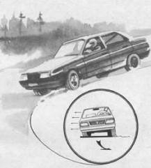

“Упор”
Когда скользкая зимняя дорога как бы стремится на повороте выбросить автомобиль на обочину под действием центробежной силы, то “спасительной соломинкой” может стать снег, окантовывающий дорогу снаружи в виде снежной насыпи или сугроба. Он может служить своеобразной опорой: в снег можно упереться боковой поверхностью покрышки, задним или передним крылом, а в отдельных случаях и дверью автомобиля. “Упор” позволяет погасить излишнюю скорость, прекратить занос, снос или боковое скольжение автомобиля. В аварийных ситуациях при отказе тормозной системы или остром дефиците тормозного пути “упор” в сочетании с ударом о препятствие (опору) может служить эффективным средством контактного торможения.
Методика перехода автомобиля на “упор” имеет ряд особенностей.
Если первым к внешнему препятствию, например к снежному брустверу, приближается переднее колесо, важно не допустить, чтобы первый контакт колеса с препятствием произошел протектором шины. В этом случае снег создает тормозной момент, а поступательная энергия переходит во вращательную. Происходит вращение вокруг заторможенного колеса. При высокой скорости автомобиля последствием такого вращения может быть его опрокидывание, если вращающийся автомобиль ударяется в снежное препятствие боковой плоскостью колес.
Другая особенность проявляется в случае, когда “упор” возникает после бокового скольжения или заноса заднего колеса. При резком ударе о препятствие возможны отскок и развитие вращения в обратном направлении. И опять же после контакта с препятствием переднего колеса могут возникнуть усиление вращения и опрокидывание по причине, сформулированной ранее.

Обопритесь наружной частью колеса о снежный вал в повороте и вы сможете успешно противодействовать центробежной силе. “Упор” поможет избежать сноса и заноса автомобиля, сохранить устойчивость и управляемость. Желательно, чтобы “упор” происходил “тянущим” колесом (передним – для переднеприводного автомобиля и задним – для заднеприводного).
Для безопасного перехода на “упор” можно воспользоваться следующими рекомендациями:
– выполнять этот маневр под острым углом;
– для заднеприводного автомобиля рекомендуется “упор” задним колесом или крылом, для переднеприводного – передним;
– для смягчения контакта с опорой необходимо увеличить тяговую силу вплоть до пробуксовки колес;
– в момент удара об опору передним колесом необходимо повернуть рулевое колесо внутрь поворота, чтобы контакт с препятствием произошел боковой поверхностью колеса, а не протектором шины;
– чтобы сохранить управляемость, нужно как можно быстрее увести управляемые колеса внутрь поворота. Однако угол поворота колес не должен быть предельным, иначе возникнет их снос;
– если использовать “упор” как способ контактного аварийного торможения, то для удара об опору желательно использовать наружную поверхность переднего или заднего крыла, конструкция которых обладает существенным запасом пассивной безопасности (возможностью к сминанию, глубокому проему, мягкой конструкцией);
– если “упор” используется как способ экстренного торможения, то переход на него желателен из состояния заноса задней частью автомобиля. При этом чем выше скорость автомобиля, тем больший угол заноса нужно использовать при ударе, не забывая об ответной реакции и отскоке; переднеприводный автомобиль может мягко перейти на “упор” передним колесом или крылом после резкого дросселирования и бокового соскальзывания передней оси.
Движение на “упоре” позволяет существенно повысить управляемость автомобиля на скользкой дороге, притом опорой могут являться даже незначительная неровность, мягкий снег, песок или другие участки с повышенным коэффициентом сцепления. “Упор” позволяет использовать мощностные возможности двигателя, чтобы успешно Сопротивляться центробежной силе на повороте. Однако твердая опора, например тротуарный бордюр или подобное препятствие, может явиться причиной опрокидывания после бокового скольжения автомобиля.